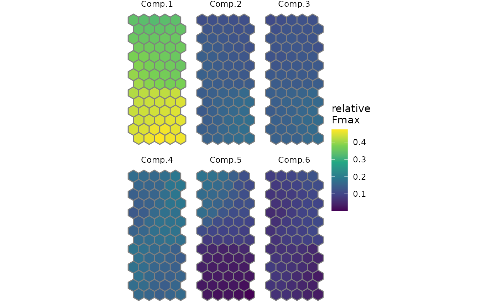
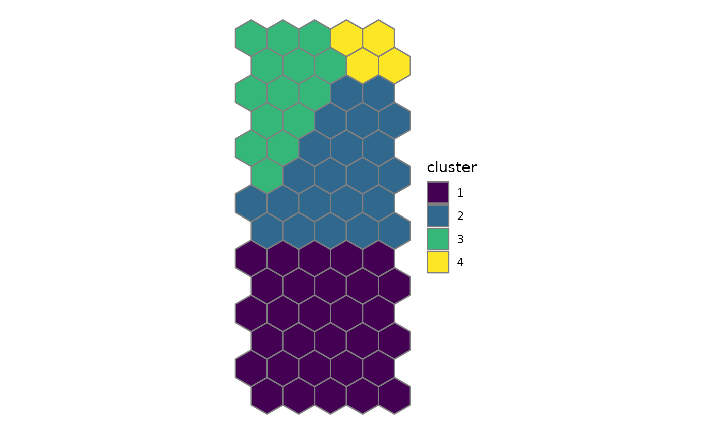
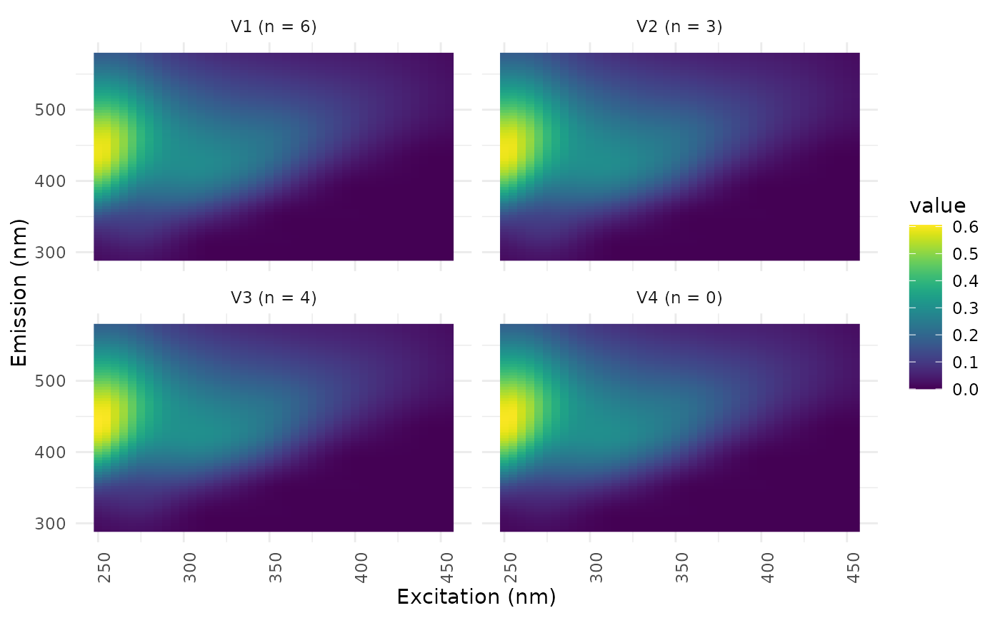

Calculate a self-organising map from the loadings of a PARAFAC model
Source:R/parafac_functions.R
eempf_som.RdInstead of the EEMs, the sample loadings (A-mode) of a PARAFAC model are arranged on a self-organising map. The loadings are scaled to Fmax, the maximum fluorescence of each component in each sample. Cuss et al. (2014) found a clearer separation of DOM sources with the relative contributions of PARAFAC components than with the EEMs themselves.
Usage
eempf_som(pfmodel, dim = "auto", normalise = TRUE, seed = NULL, ...)
# S3 method for class 'eempf_som'
print(x, ...)Arguments
- pfmodel
object of class parafac, see
eem_parafac- dim
size of the map, either
"auto"(default) or a numeric vectorc(xdim, ydim), seeeemsom- normalise
logical, if TRUE (default), the Fmax values of each sample are divided by their sum, so the map shows the relative composition of the samples (Cuss et al. 2014, Wheeler et al. 2017). If FALSE, the Fmax values are used directly (Zhang et al. 2015).
- seed
seed for the random number generator. With
NULL(default), the current random number stream of the session is used, soset.seedbefore the call gives reproducible results. With a number, the seed is set for this calculation only and the random number state of the session is restored afterwards.- ...
additional parameters passed on to
eemsom(topo,rlen,alpha,mode,init,cores,verbose) and tosom- x
object of class eempf_som
Value
object of class eempf_som and eemsom, see eemsom. Additionally, it contains the element pfmodel, the PARAFAC model with emission (B) and excitation (C) loadings scaled to Fmax (see eempf_rescaleBC), which is used to reconstruct prototype EEMs and to map new samples. The element normalise is the logical value of the argument and norm_factors are the sums of the Fmax values (or 1).
Details
The result can be used with the functions for self-organising maps of EEMs, e.g. eemsom_samples, eemsom_cluster, eemsom_split and the plot functions. The prototype EEM of a unit (eemsom_codes, ggeem) is the sum of the PARAFAC components weighted by the prototype loadings. eemsom_plot_cplane shows component planes of the PARAFAC components with the argument comps. eemsom_predict maps new samples after calculating their loadings with the fixed emission and excitation loadings of the PARAFAC model.
Relative contributions (normalise = TRUE) are only meaningful for non-negative loadings, i.e. for models calculated with const = c("nonneg", "nonneg", "nonneg") in eem_parafac.
eemsom_regions and eemsom_stability are not available for these maps.
References
Cuss, C. W., Shi, Y. X., McConnell, S. M., Gueguen, C. (2014). Changes in the fluorescence composition of multiple DOM sources over pH gradients assessed by combining parallel factor analysis and self-organizing maps. Journal of Geophysical Research: Biogeosciences 119(9), 1850-1860. doi:10.1002/2013JG002598
Wheeler, K. I., Levia, D. F., Hudson, J. E. (2017). Tracking senescence-induced patterns in leaf litter leachate using parallel factor analysis (PARAFAC) modeling and self-organizing maps. Journal of Geophysical Research: Biogeosciences 122(9), 2233-2250. doi:10.1002/2016JG003677
Zhang, Y., Liang, X., Wang, Z., Xu, L. (2015). A novel approach combining self-organizing map and parallel factor analysis for monitoring water quality of watersheds under non-point source pollution. Scientific Reports 5, 16079. doi:10.1038/srep16079
Examples
data(pf_models)
pfsom <- eempf_som(pf4[[1]], rlen = 100, seed = 42)
pfsom
#> Self-organising map of 206 samples from a PARAFAC model with 6 components
#> map: 5 x 14 hexagonal units
#> loadings: relative (Fmax / sum of Fmax)
#> clusters: none
eemsom_plot_cplane(pfsom, comps = 1:6)

pfsom <- eemsom_cluster(pfsom, k = 4)
eemsom_plot_map(pfsom, type = "cluster")

ggeem(pfsom, units = 1:4)
